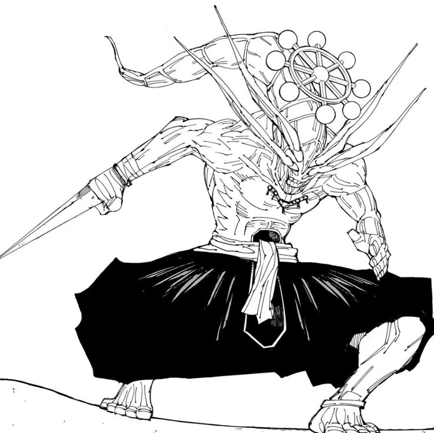

Mahoraga e a invocacao que mais passa sensacao de perigo dentro do repertorio das Dez Sombras. Ele representa um limite extremo, quase como se o proprio Megumi estivesse chamando algo dificil de controlar. Isso faz essa criatura ser tao memoravel: nao e so poder, e tambem risco, sacrificio e a ideia de ir longe demais para vencer.